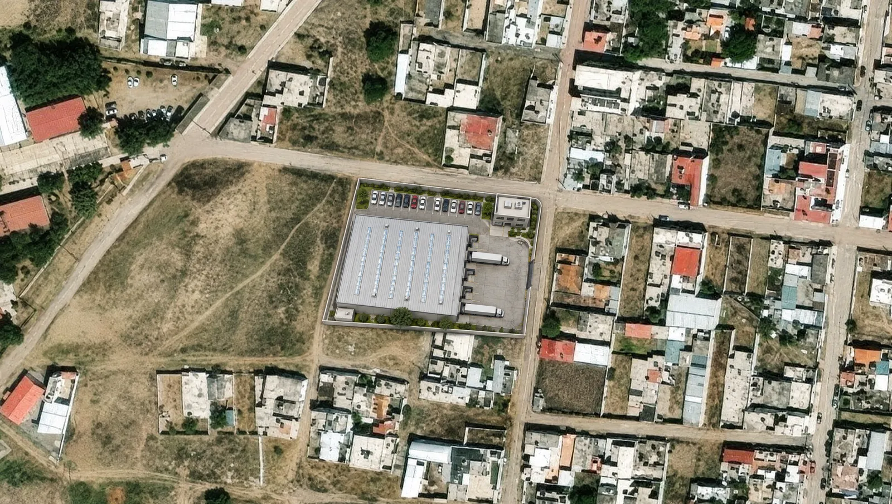
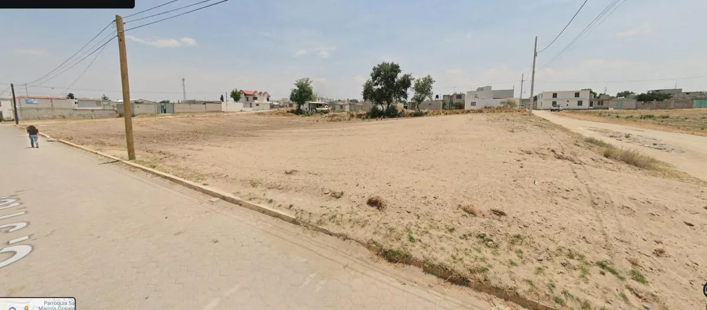
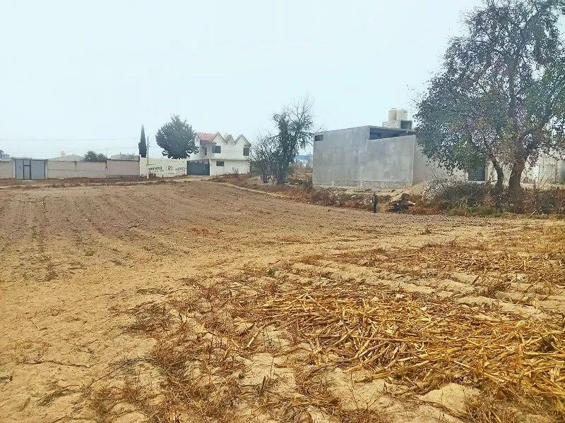
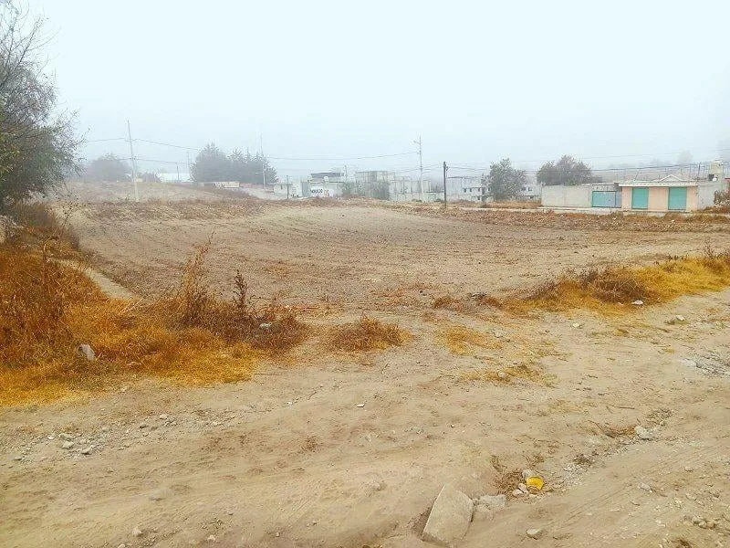
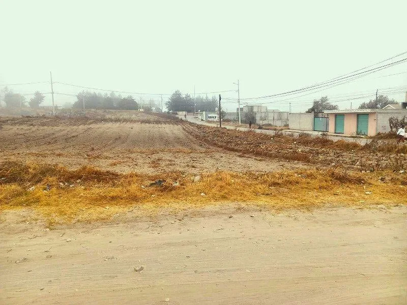
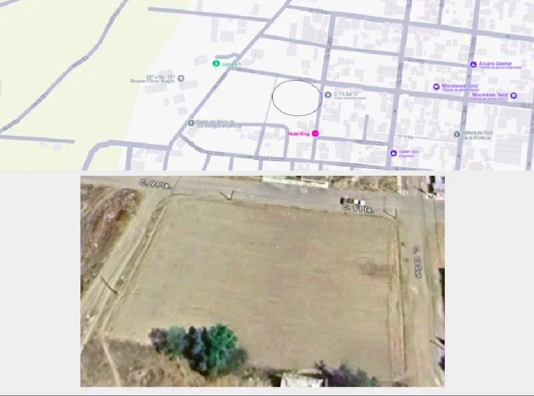
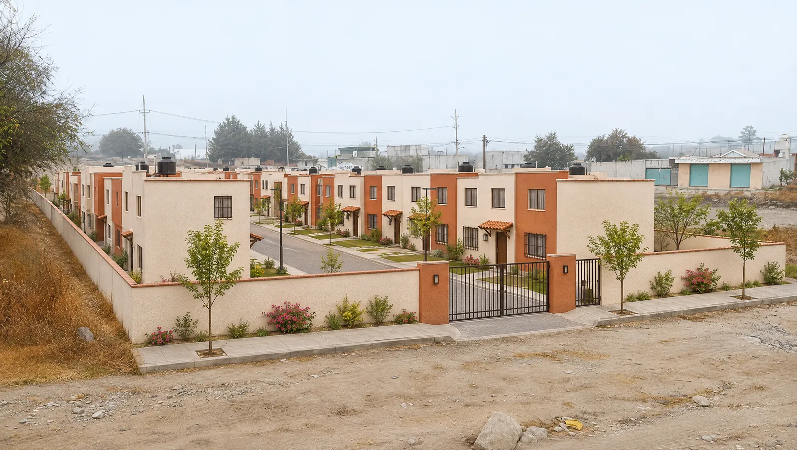

Visualización ilustrativa
Visualización ilustrativaBodega o centro de distribución
Para proveedores y transportistas que trabajan con la planta. Andenes sobre 13 Sur y patio de maniobras sin cruzar el pueblo.
Rafael Lara Grajales, Puebla. Terreno urbano con dos frentes a calle, libre de gravamen. Disponible para comprar, rentar completo o por fracción.
Cuatro linderos, dos de ellos a calle. Los datos de abajo salen de la escritura, del certificado del Registro Público y del avalúo técnico.
Imagen satelital real del predio con sus medidas. Es casi una manzana completa entre Calle 9 Poniente y 13 Sur.



Simulaciones hechas sobre la imagen satelital real, respetando las medidas del predio. Las superficies son un programa ilustrativo; el proyecto final depende de la licencia municipal. Los letreros son genéricos y no representan a ninguna marca.
Audi México arma en San José Chiapa desde 2016. A su alrededor crecieron Ciudad Modelo, proveedores, transportistas y miles de empleos. Lara Grajales es el pueblo consolidado más cercano a la planta, con servicios, escuelas y comercio.
Distancias por carretera calculadas con OpenStreetMap; los tiempos son sin tráfico. Esquema sin escala.
Fotos reales del predio. El video vertical está animado a partir de una de ellas.





Tres usos que tienen sentido aquí. Las imágenes son visualizaciones ilustrativas hechas sobre fotos reales del terreno; el uso final depende del proyecto y de la licencia municipal.
Visualización ilustrativaPara proveedores y transportistas que trabajan con la planta. Andenes sobre 13 Sur y patio de maniobras sin cruzar el pueblo.
 Visualización ilustrativa
Visualización ilustrativaUna tienda de formato chico o una plaza de locales. La esquina con dos frentes da visibilidad y acceso por las dos calles.

Visualización ilustrativaUn conjunto pequeño de casas o departamentos en renta para quienes trabajan en el corredor y prefieren vivir en un pueblo con servicios.
Elige la que se ajuste a tu proyecto. Las condiciones se platican directo, sin intermediarios.
El terreno completo como reserva o para desarrollar. La escritura y el certificado están listos para revisión de tu notario.
Los 3,473 m² en arrendamiento de largo plazo para patio, bodega o la operación que necesites.
Por ejemplo, unos 1,000 m² en la esquina para un comercio, con frente a las dos calles.
Tú defines la nave o el local y se renta ya construido. Se evalúa caso por caso según plazo y garantías.
Se comparten completos con interesados después de una primera llamada.
Te respondemos por WhatsApp con precio, condiciones y fecha para visitar el terreno.
El precio de venta y la renta dependen del esquema y del plazo. Escríbenos por WhatsApp y te enviamos las condiciones el mismo día.
Es un predio urbano. El avalúo de 2016 lo ubica en zona habitacional y el entorno tiene comercio de barrio. La licencia para un giro específico se tramita ante el Ayuntamiento de Rafael Lara Grajales según el proyecto; te acompañamos en la consulta.
Sí. El certificado del Registro Público de Tepeaca de noviembre de 2025 dice que el folio está libre de gravamen y limitaciones. La hipoteca que tuvo antes del año 2000 se canceló e inscribió ese mismo año.
A 7.6 km por carretera de la planta Audi México en San José Chiapa, unos 10 minutos en auto.
Sí. Una opción es una fracción de alrededor de 1,000 m² en la esquina, con frente a las dos calles. Otras medidas se platican.
Sí. Agenda por WhatsApp y te recibimos en el terreno con los documentos.